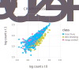
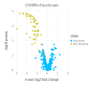

Tutorial
The easiest way to use Crispulator is via the command line config file. If this format is too constraining, the Custom Simulations has a detailed walk- through of writing a custom simulation where each step can be modified according to need.
Graphical overview
The simulation is laid out in the following manner:

Getting started
First, navigate to the Crispulator directory.
You can find the directory by running
$ julia -e 'println(Pkg.dir("Crispulator"))'There should be a YAML file called example_config.yml. Open this is in a text editor and it should look like this
# This is an example configuration file. Whitespace is important.
# Settings pertaining to the library design
library:
genome:
num-genes: 500
num-guides-per-gene: 5
frac-increasing-genes: 0.02 # fraction of genes with a positive phenotype
frac-decreasing-genes: 0.1 # fraction of genes with a negative phenotype
guides:
crispr-type: CRISPRn # either CRISPRi or CRISPRn
frac-high-quality: 0.9 # fraction of high quality guides
mean-high-quality-kd: 0.85 # mean knockdown by a high quality guide (CRISPRi only)
screen:
type: facs # either facs or growth
num-runs: 10 # how many independent runs
representation: # integer value, how much larger are samples than the library
- transfection: 100
- selection: 100
- sequencing: 100
# screen-type specific parameters
bin-size: 0.25 # size of tail to sample from, must be between 0 and 0.5 (FACS only)
std-noise: 1 # (FACS only)
num-bottlenecks: 10 # (Growth only)This gives access to most dials in the simulation, if something is missing than see Custom Simulations.
Now, lets remove all genes that have a positive phenotype by changing line 8 to 0.0:
frac-increasing-genes: 0.0 # fraction of genes with a positive phenotypeRunning simulation
Now, we can actually run the code by executing the following command
julia src/run.jl config example_config.yml test_outputHere config tells CRISPulator to use the provided config example_config.yml and test_output is the directory where the results will be saved. This directory will be created if it doesn't exist.
The output should look like
output = readstring(`julia ../../src/run.jl config example_config.yml test_output`) # hide
println(output) # hideThe test_output/ directory should now be populated with all the files
counts.svg
volcano.svgOutput
The folder contains one of the raw count scatterplots (left) and a volcano plot of mean log2 fold change versus significance of each gene (right)
 
It also has a useful table that contains all the summary statistic information.
using DataFrames # hide
head(readtable(joinpath("test_output", "results_table.csv"))) # hideThe table below describes each column
| Column Name | Meaning |
|---|---|
method | Which summary statistic was used (e.g. Simulation.auprc) |
measure | Whether the score is only for increasing genes (inc), decreasing (dec) or both (incdec). Allows independent evaluation on which type of genes the screen can accurately evaluate. |
genetype | Whether the score is for linear, sigmoidal, or all genes (see Simulation.KDPhenotypeRelationship). Helps determine if CRISPRn or CRISPRi is better for this design. |
mean_score | Average score |
std_score | Standard deviation in scores |
conf_max | Upper limit of 95% confidence interval |
conf_min | Lower limit of 95% confidence interval |
n | Number of independent replicates |